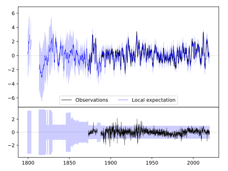
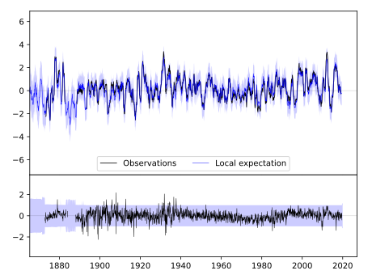
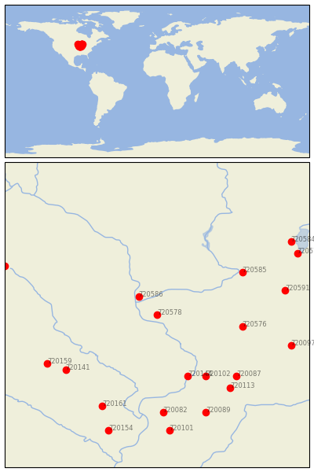

LANCASTER 4 WSW [USA]


| Neighbour | Name | Country | Distance | Lon/Lat | Years |
|---|
| 720578 | LANCASTER 4 WSW | USA | 0 | -90.8, 42.8 | 1872-2019 |
| 720586 | PRAIRIE DU CHIEN | USA | 41 | -91.1, 43.1 | 1822-2019 |
| 720576 | BRODHEAD | USA | 116 | -89.4, 42.6 | 1893-2019 |
| 720144 | CLINTON #1 | USA | 118 | -90.3, 41.8 | 1857-2019 |
| 720102 | MORRISON | USA | 129 | -90.0, 41.8 | 1880-2019 |
| 720585 | PORTAGE | USA | 137 | -89.4, 43.5 | 1890-2019 |
| 720087 | DIXON 1 NW | USA | 154 | -89.5, 41.8 | 1881-2019 |
| 720141 | BELLE PLAINE | USA | 158 | -92.3, 41.9 | 1889-2019 |
| 720113 | WALNUT | USA | 166 | -89.6, 41.6 | 1892-2019 |
| 720159 | TOLEDO 3N | USA | 172 | -92.6, 42.0 | 1893-2019 |
| 720591 | WATERTOWN | USA | 176 | -88.7, 43.2 | 1871-2019 |
| 720082 | ALEDO | USA | 178 | -90.7, 41.2 | 1879-2019 |
| 720161 | WASHINGTON | USA | 182 | -91.7, 41.3 | 1875-2019 |
| 720097 | MARENGO | USA | 188 | -88.6, 42.3 | 1856-2019 |
| 720089 | GALVA | USA | 189 | -90.0, 41.2 | 1862-2019 |
| 720101 | MONMOUTH | USA | 211 | -90.6, 40.9 | 1881-2019 |
| 720577 | FOND DU LAC | USA | 216 | -88.5, 43.8 | 1871-2019 |
| 720247 | ALBERT LEA 3 SE | USA | 221 | -93.3, 43.6 | 1885-2019 |
| 720154 | MT PLEASANT 1 SSW | USA | 221 | -91.6, 40.9 | 1863-2019 |
| 720584 | OSHKOSH | USA | 222 | -88.6, 44.0 | 1871-2019 |